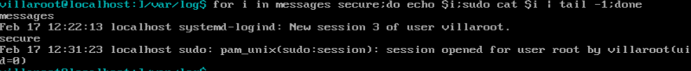

Bash: Using For-Loop One-Liners for Admin Tasks
Date: Febuary 18, 2021
Summary:
Using for-loop one-liners is a great way to speed up manual tasks. It's one of the most common commands that I use when on a Linux machine. In this article, I'll explain what a for-loop is, and how it can be modified to be a one-liner. Then provide two examples of how an Admin would use this.
Details:
A for-loop is a statement that allows you to perform a set of commands, 'x' amount of times. Where 'x' is a value you can set. Below is the syntax for a basic for-loop you might see in a bash script. Where each set of brackets [] is customizable by the programmer.
for [element] in [given list]
do
[Commands]
done
The example above is essentially saying for every ‘element’ in the ‘given list’ perform or ‘do’ the following actions ‘commands’. The loops terminates with the 'done' command. Now we can modify this to perform a typical task that Linux admins use. The example I am going to give is outputting the last line in multiple files with a for loop. I have a fresh Centos7 vm setup, so I don’t have much ‘real world’ logs to give an example. Therfore, I’m going to use two logs in /var/log that come with any Centos7 machine which is ‘messages’ and ‘secure’, and output the last line in each file. To put in the same format as the first example, it will look as follows:
for i in messages secure
do
echo $i
cat $i | tail -1
done
We will use 'i' as the element to hold the current variable. The list we are providing
is 'messages' and 'secure'. Note: ‘$i’
holds the value that is currently being passed through the loop.
Now we go into the loop and 'do' the commands 'echo $i' and
'cat $i | tail -1' for every element. 'Echo $i' outputs the element name which is a
good tip, so we know which file the output belongs to. 'cat $i' will output the file which will get
passed through the pipe ‘|’ into the command 'tail -1'. This will grab content starting from
the end of the file, and ’1’ tells it to grab only 1 line. This set of commands
will be performed on each element, so first it performs the commands for the ‘messages’
element, then performs the commands on the ‘secure’ element.
Let’s take this to the next step and make it a one-liner. In linux if you want
to perform two commands in the same line, just put a semicolon between the commands.
So if we were to do a ‘pwd’ and ‘date’ command in one line, you would type ‘pwd;date’.
With that, we can combine the for-loop into one line, so the syntax would look as follows:
for [element] in [given list];do [Commands];done
In a way, the for-loop is divided into three parts: ‘for’, ‘do’, and ‘done'. Where ‘for’ sets up the loop with which variables to use, and the element's name. ‘Do’ performs the commands to each element, and ‘done’ ends the loop. Between those three parts we put a semicolon. For the example of outputting the tail of messages and secure we will need to add another semicolon inside the do part because we are performing two commands ‘echo $i’ and ‘cat $i | tail -1’. Just like ‘pwd;date’, we will combine it to ‘echo $i; cat $i | tail -1’. The end result is below:
for i in messages secure;do echo $i; cat $i | tail -1;done
Here is a snapshot of it ran on a Centos7 VM:
Building on this, you can even do a for-loop when you want to perform a quick action that requires you to ssh to different servers. Let's say we want to perform a checksum on a fiele located on two different servers. We would need to ssh to 'dataserver1' and 'dataserver2' and perform the checksum 'cksum' of the file located at /var/log/test.log. It would look as follows:
for i in 1 2;do echo $i; ssh -q dataserver$i "cksum /var/log/test.log";done
If you want to do more than two commands in the 'do' block, just add another semicolon then
put the other command.
Thanks for reading about Bash for-loops from a Linx Admin's point of view!